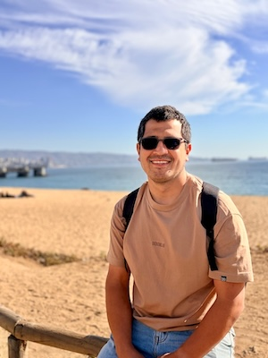

Israel Lopez
About Me
My name is Israel Lopez, and I am from Viña del Mar, Chile. I am currently studying Software Development and enjoy learning more about web design, HTML, CSS, and JavaScript. I love spending time with my family, reading, exercising, and creating projects that help me continue growing personally and professionally.

Viña del Mar, Chile
Chile is a beautiful country in South America known for its long Pacific coastline, the Andes Mountains, the Atacama Desert, and Patagonia. Viña del Mar, my hometown, is a coastal city known as the “Garden City” because of its parks, green spaces, beaches, and beautiful ocean views.